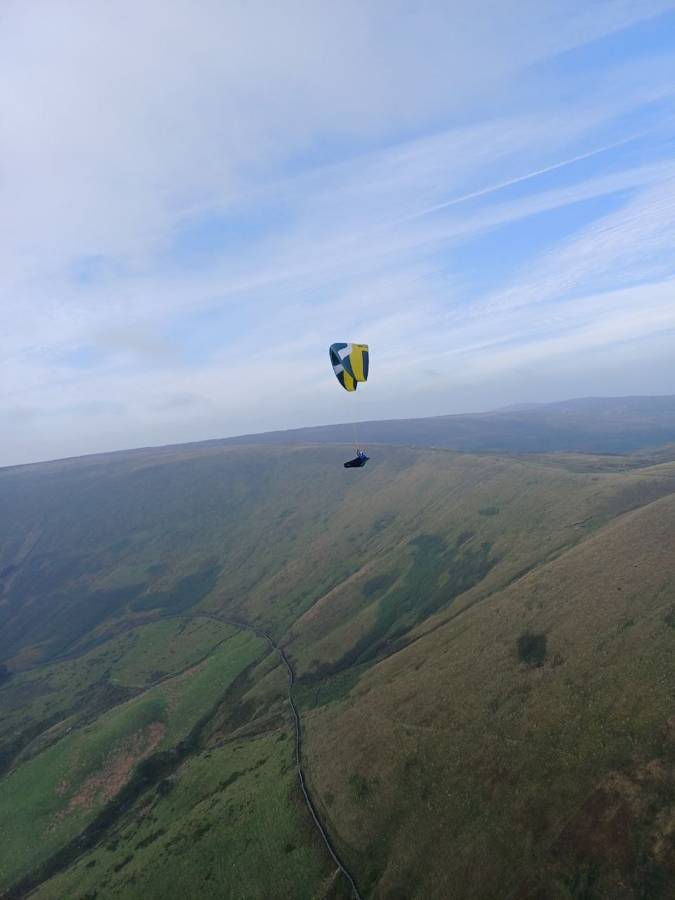

Lazy, hazy autumn thermals
How was your summer? Glued to the x-alps live tracking, off on your own adventures or just grabbing a bit of evening soaring when you could?
We’ve got a great issue of photos of everyone’s summer fun. A flight to the coast from John and Scott, a day of frustration for Brian, dispatches from the British Nationals from Doug, the latest comps tables and some top tips from PG Forum for banishing high altitude nerves.
Make the most of the the last of the summer gloves weather and don’t forget to book our upcoming club nights in your diary.
editor@penninesoaringclub.org.uk.

Cover photo: Jim Ashley snaps Andy Clegg on his Chili
{kind=link}
Chairman’s Chunterings
Brian Stewart, Chairman
The driest/warmest/sunniest summer ever, and what happens? It’s always windy up here. At least that’s how it’s felt this year. Even the big Dunbar day was a bit too tasty for mere mortals like me, so when the forecasts all seemed to align a couple of Sundays ago, RASP painting the county red and wonder of wonders: LIGHT WINDS, what could possibly go wrong…?
As one of the more venerable of the Parlick old-timers, I should know full well that almost nil wind on the south face means a frustrating, hot, sweaty wait for the 1 o’clock thermal, a frantic dash to be in the air (and not in the way) when it arrives. The number of times I’ve been slogging back up after a case of premature aviation, or caught with my harness down when it arrived too early, only to watch the skygods specking out towards the clouds. Once or twice I’ve been up with the SGs, but my record’s pretty poor.
So, knowing all this, why was I still on the ground when the bun fight started? Timing is everything in this game, and after they all lifted off, that was it for ages. Nothing for it but to hang around and hope there’d be another one along soon. But thermals aren’t buses…
Tim set off to fly down on retrieve duty for Andrew, only to find he’d left his glider bag on top. Cue frantic radio messages and recruitment of civilians to aid in the hot and sticky search and carry the bag down to him.
Of course the bag turned up.
In his harness.
Pints are owed…
Anyway I hung around long enough to be able to avoid retrieve duty, as most weren’t too far scattered. Stupid sport…
Shout Outs
A fraction too late for congratulations in previous issue, it’s a huge round of applause for new British Champion Richard Butterworth.
Richard has promised to tell us all about it at the first winter club night in October. Don’t miss it!
{kind=link}
Winter Socials
Jacqui Kavanagh, Social Secretary
Kicking off our winter social programme, Richard Butterworth has agreed to talk in October about his experience in China earlier this year and his winning the British Open in Krushevo.
Elliot Brown has kindly agreed to talk in November about his experience as a beginner starting out in comps and particularly how he experiences the SRS in Ager which is due to happen shortly.
As usual, we’ll be at the Sea View Inn with reminders on Telegram closer to the dates.
Money Box
Jim Ashley, Treasurer
SIV Support
If you have completed your first SIV course you could get a £50 contribution from the club. This year only one person has claimed it so far, there must be others. Drop me a line if you’ve completed a recognised course recently: accounts@penninesoaringclub.org.uk.
A Grand Day Out
Scott O’Neil and John Oliver fly from Bradwell to Bridlington
{kind=link}
{kind=link}
{kind=link}
{kind=link}
{kind=link}
{kind=link}

Photo Diary
Mike Scott flies Tiger Mountain, Issaquah, near Seattle, Washington
{kind=link}

{kind=link}
{kind=link}
{kind=link}
{kind=link}
{kind=link}
{kind=link}
{kind=link}
{kind=link}
Competition Diary
Doug Neil flies at the 2025 British Nationals in Monte Cucco
My second trip to Italy in 2025, this time for the British Nationals at Monte Cucco. Conditions weren’t great but we managed to fly five tasks during the week and for myself a mixed bag of results.
Task 1 and 2 were at the Sarnano takeoff - similar tasks on both days. I misjudged the height I needed to hit turnpoint 1 on task 1 so missed out on a reasonable flight. Task 2 allowed me to have a second go at it, and I made it comfortably then flew to within 7km of turnpoint 2 before having to turn back to a decent landing field (3rd place on the day).
{kind=link}
{kind=link}
{kind=link}
Tasks 3,4 and 5 were at the Monte Cucco North takeoff. Task 3 had a seemingly impossible (for sports class gliders) 12km first leg into wind; 3 pilots made it to the first turnpoint but were on the ground soon afterwards. I made it past minimum distance but landed out in the valley along with the rest of the field.

{kind=link}
{kind=link}
Task 4 and 5 started by going downwind over the back of Monte Cucco. Task 4 was a great task for most people, but I bombed out after only 7km - making the same mistake I made trying to go XC from Longridge a few months ago; starting too low and hitting major sink (constant 6-8 down for at least 3 minutes) over the downhill side of the mountain, leaving me no height to search for a climb.
Task 5 gave me another shot at the downwind leg and I made sure I was high enough to avoid the sinking air. I ended up 5500ft above the field I landed in the previous day and managed to fly 33km, using several thermals, each taking me to 7-8000ft. Shortly after landing, the task was stopped due to approaching thunderstorms. This was a good day for me with 3rd place, after a couple other pilots were DQd for airspace infringement.
Task 5’s good score meant I snuck into 3rd place in the British competition and 6th place overall. One more competition this year, the third part of the British Open Series in Wales in mid September. I’m currently in 2nd place in this comp after winning task 1 earlier in the year.
Competitions
Elliott Brown, Competitions Secretary
Northern Challenge Series 2025
XContest - Pennine Soaring Club
XC League
The Gallery


Top Tips
Three years ago, an experienced South Wales pilot popped up on Paragliding Forum asking for tips to help with the nerves that he’d started feeling in thermals and at altitude.
The thread has comments from all sorts of pilots, from an ex-British champion to PSC punters and the opening poster came back this week to say how much the advice had helped him. Seeing as we all get the heebie-jeebies sometimes, it seemed a good idea to pull the ideas in that thread into a list of tips for combatting nerves, so here they are.
Tips for nerves
Battle through and get more exposure
-
Get even higher and do so often and the nerves will fade away.
-
After about half an hour or so I somehow manage to disconnect from the ground and after that I’m normally fine.
Change your perspective
-
A mantra that I think about: “It’s not scary, it’s exciting”.
-
It’s often better if you can concentrate on where others are in a thermal; then your height will become relative to them rather than the ground.
-
When you start to feel “OMG something is wrong I am too high/ it is too turbulent/it is too strong” start to think to something else: if you keep focusing on those thoughts you will only make those fears bigger and bigger until you can’t handle it anymore. Look at something far away (the next cloud? The next ridge?) and let your body manage the situation while your mind focus on something else.
-
I have found a screaming vario to be a big factor increasing anxiety [so customise the beeps]. Normal beep ranges and changes to +6 m/s are fine. Beyond that I don’t need further info so let it continue beeping at that rate even if climbing more. It’ll just sound nice and even with a calming effect… perfectly even circles. Obviously, the cutoff point can be set to whatever individual tolerances are preferred, but the calming effect of an evenly beeping vario I cannot understate.
-
One thing that helps me when I get nervous, if there are quite a few other paragliders around, is to think to myself: “They’re not all collapsing, are they? So why should mine collapse? I’m a reasonably competent pilot (which you clearly are) and I’m on a certified EN B wing.” And if the others ARE all getting collapses - go and land smartish!
-
Don’t look down. Seriously, if you’re like me then when you’re stressed you might find your attention starts to focus onto your instruments and onto the area of ground immediately in front of your harness. It tenses you up, stops you flying properly and makes you look at the ground, thinking about how high you are all the time. Take a few deep breaths and force your gaze up and out to the horizon, everything feels better.
-
If you are flying in an open harness, try to fly in a pod. I’m sure it makes you feel more secure.
Jedi mind tricks
-
Talk to yourself. I know more than one pilot who does that. Say something like “Jimmy you can handle that. And if you do not like it just get out of the thermal you can always do it and come back the next day. But so far, you are doing fine.”
-
Cognitive Behavioural Therapy (CBT) involves identifying the unhelpful thoughts (“cognitions”) which are causing the anxiety, and then (when you are calm and relaxed and not in the problematic environment) devising different ones, which you then then very deliberately substitute for them when next in the situation (that’s the “behavioural” bit). So what I did was to determine how and where I could safely land before I even took off, then if becoming fearful in the air say to myself out loud “look, you really are safer up here than if close to the ground, and when you do want to get down, you know exactly how you can easily achieve that”.
-
It’s worth Googling ‘Box Breathing’, which is sets of inhalation and exhalation to counts of four and really works. I’ve heard that some in the military call it ‘combat breathing’ and it’s taught as an effective fast relaxation technique before you act.
-
Smile inside your helmet.
-
Sing.
-
I talk to my wing, I talk to the air, I talk to myself. And I imitate a TV cooking show presenter from the 80’s who had a funny accent from the South of France to make all these comments. The result is rather ridiculous and somehow it relaxes me.
Set goals
-
Give little goals to yourself, so you will focus on those goals instead of your inner fears. A little goal may be something like “Well I am now at 1800 meters and climbing. I want to ride this at least to 2000 meters and then if I do not like I will get out of it.” -or- “I will keep riding this beast for at least 30 more seconds and then re-assess the situation”. This is by far what helped me the most because the trick is to keep giving yourself more little goals: so at 2000 meters you give yourself the goal to reach 2200 meters and so on.
-
Don’t just rock up to the hill with a vague idea to fly. Look at the weather the day before, find a spot 26km downwind, and program a declared flight into your instrument. Do the whole thing, starting cylinder too. Do it by the rules (no additional cylinders, diameters 400m, points far enough apart that they’re going to get the bonus if you make it). Then when you get to the hill, activate the route. You’ve then got: (1) an immediate goal to get into the start cylinder. Place this so that you’re not in it when you launch, but have to fly 100m or so off the ridge to get to it and (2) once you’ve pinged the start cylinder, your instrument will start pointing at goal, 25km or more away, and counting down the distance. Your mission is now get high, stay high, go downwind. With that goal literally sitting there in your lap, you’ve got a nice distraction from any nervousness, and motivation to ignore it because only by ignoring it will you reach your target.
Analyse that
- After each flight, spend some time evaluating in retrospective what happened (which may be different from what you felt while flying). Was it really bad? Really scary? Maybe not, so dare a little bit more the next flight!
Don’t rush it
-
Give time to yourself to recover. Little by little you will get back what you had before. Remember, it is still inside of you.
-
My solution was to step back , forget about distance , forget about pushing harder and just chill on the coastline with mates soaring. Socializing with like minded souls on launch and just enjoying the sport in its simplest form.
Dates For Your Diary
14th - 19th September - BP Cup - Sopot, Bulgaria
20th - 23rd November - Kendal Mountain Festival - Kendal, Lake District
13th October - Club Night - Richard Butterworth: China and winning the British Open in Krushevo
3rd November (FIRST MONDAY OF NOVEMBER) - Club Night - Elliott Brown: Starting Out in Comps
8th December - Club Night - Richard Meek: TBC
12th January - Club Night
9th February - Club Night
9th March - Club Night
Your Newsletter Needs You
Appear in the next newsletter! We need submissions for…
A Grand Day Out
2-3 paragraphs describing a fun day. You’re welcome to write more if you’re feeling creative but a couple of paragraphs is plenty. Could be epic, could be daft, could be simply the first time you flew for six months. If you’ve had a good day and you took some pictures, send it in.
Why Not Visit…
A quick guide to a site that you like, at home or abroad. Tell us where it is, what it’s like to fly, any watch-outs and how to contact the locals. Attach a photo and email it over.
The Gallery
Send in any recent(ish) shots with when and where they were taken. Spectacular, silly, from the ground or from the air, it doesn’t matter. Let’s see what you’ve been up to. Videos are very welcome too but pop them on YouTube or Vimeo and send a link for the newsletter.
Shout Outs
First ever XC? Smashed a PB? Took part in a comp? Let us know and get a shout out in the newsletter. Nominate your mates if they won’t do it themselves.
Top Tips
Spotted a bargain? Got a great travel tip? Know how to make Bluetooth connections work on an iPhone? Share your best ideas.
Send submissions on these or anything else you’d like to see featured to editor@penninesoaringclub.org.uk. You can also drop them over using the web form or message Neil on Telegram.
Fly safe, see you in August.